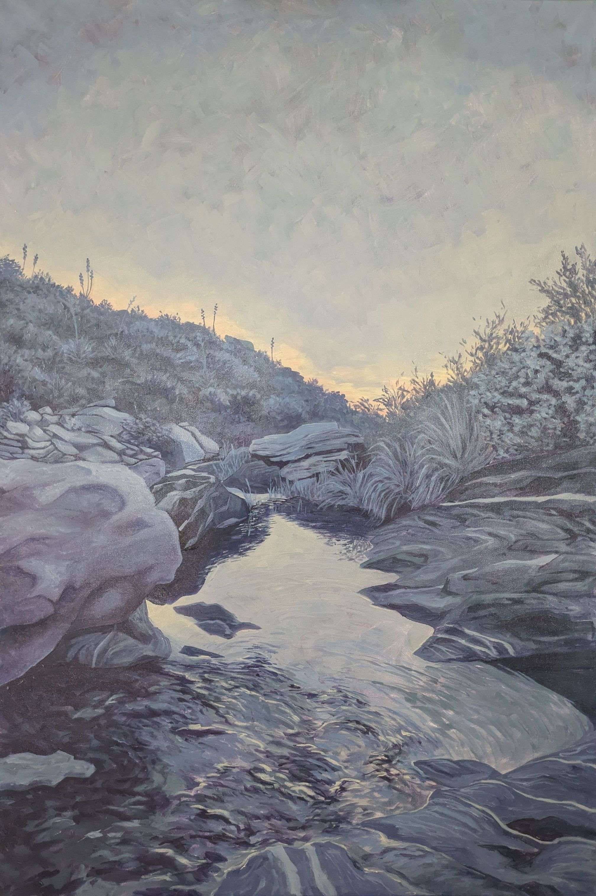
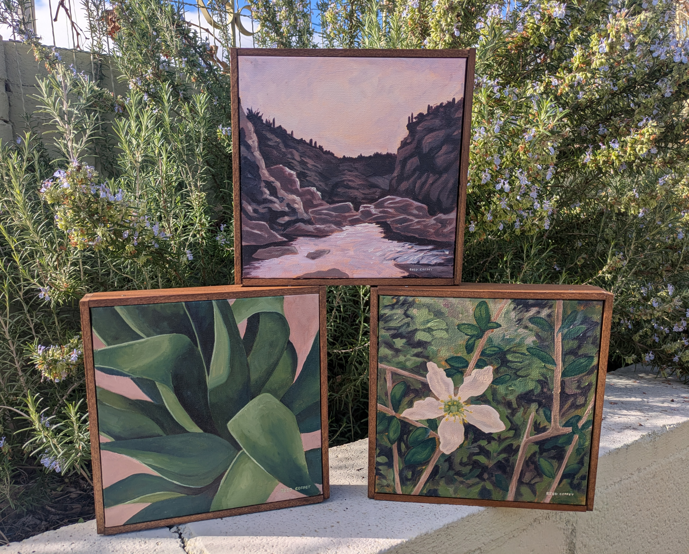

Welcome to my studio update pages! You can expect sporatic posts with
updates about recent pieces, upcoming collections, current exhibitions,
and miscellaneous tidbits about my art and my process. As you can imagine from my
lack of links to Instagram or Facebook, I keep a pretty minimal social media presence.
Here and Bluesky are the best places to keep up to date about the latest things cooking
in my studio! Pardon the dust; this page will (hopefully!) evolve with time. I'm
very much winging this whole html thing. On to the news!
The first show that I've been a part of in the last few years just wrapped up a couple of
weeks ago. Tohono Chul is a fantastic botanical garden near where I live in Tucson, known
for highlighting native plants over its 49 acres. I was fortunate enough to be selected to participate in the
first installation of its Sonoran Hourglass series, Dawn's Early Light. My piece, Sonoran
Stillness was among those that sold, marking the first sale of one of my 2'x3' canvases
(my favorite to paint on!).

To follow that up, I've got five itty bitty pieces in Tohono Chul's 10 x 10 | A Fundraiser show. Go check them out if you've got the chance! They'll be rotating in through the next couple of months as pieces sell. One of them is from very near the same area I took the reference photo for Sonoran Stillness. Bonus points for any Tucsonan who can name the area! I'm also currently struggling with the question of if I should prune my rosemary bush or not- look at those flowers! The bees love it! It's also taking over my raised planter and I'd like to get some plants in before summer hits like a ton of bricks.

In other news, I've got a new 2'x3' piece in the works. I'm such a sucker for this early stage in the painting where you can see so much of the grounding color peeking through. I generally go for a much brighter first layer than this painting has, but a wine-colored backdrop was more in line with the drama I'm hoping to evoke with this piece. I'm already plugging along well beyond this point and the painting is in its awkward teenage phase. I won't subject you to that particular update, but I've had to learn to trust the process and I'm excited for this to develop into a piece for the next collection I've been brainstorming. More on that at a later date!

I've got a deep well of reference photos to draw from left over from
my trail working days. This one was from a day working on the Arizona Trail north of Flagstaff. It's easy to
look back on field work with rose colored glasses, but this was one of those days where the weather was so lovely
and the work so satisfying that I'd go back in an instant.